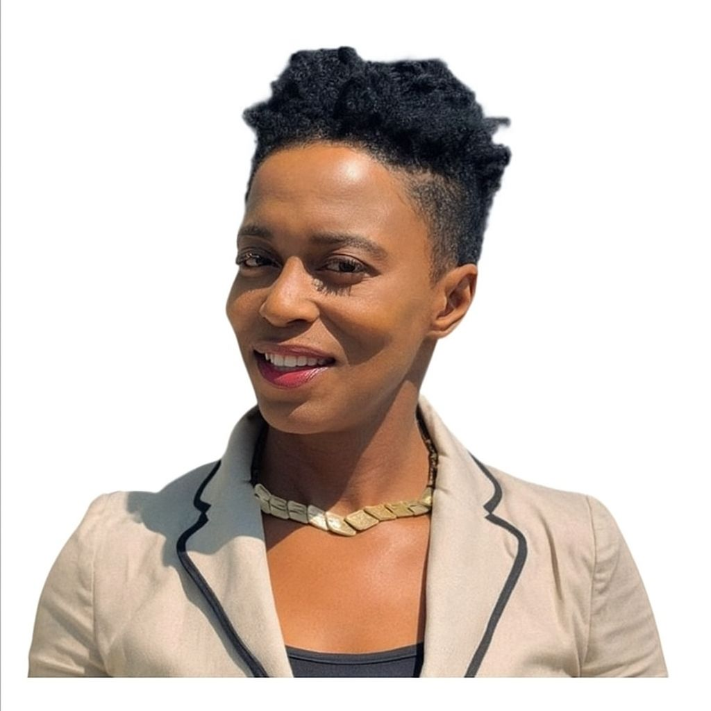
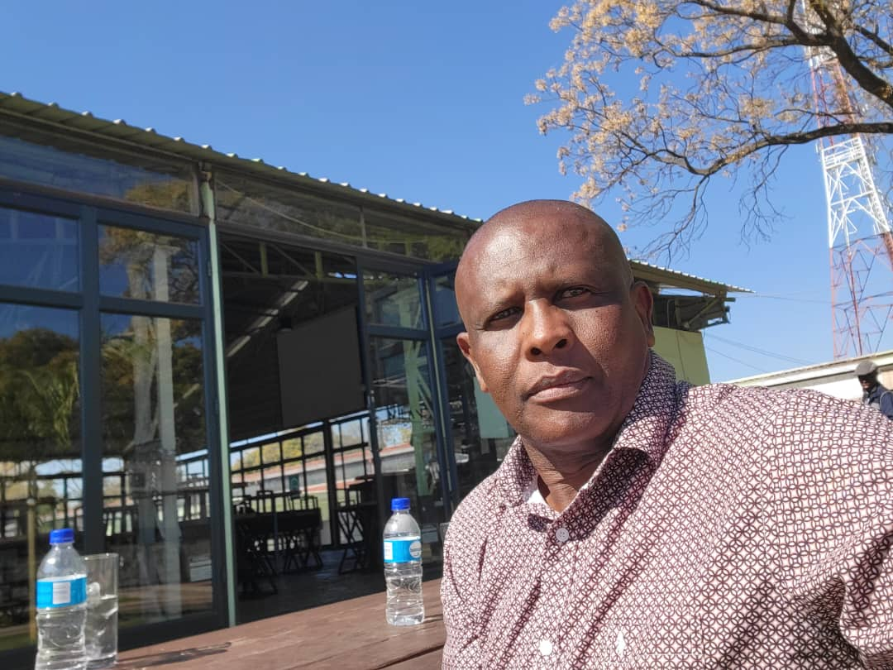

COMHWE
Community Advocacy
Community Advocacy
At COMHWE, our aim is to foster community advocacy and provide compassionate, faith-based mental health support. We are committed to helping individuals and couples navigate life's challenges through Christian counseling, promoting healing, growth, and stronger relationships grounded in faith and community values.
A stigma-free, inclusive, and compassionate community where every individual is empowered to achieve positive mental health and holistic wellbeing.
To deliver accessible, person-centred mental health and wellbeing support through community outreach, early intervention, and collaborative partnerships.

Founder & Executive Director
A dynamic mental health advocate and community leader committed to advancing holistic well-being and empowering communities.
Vice Chairperson
A dedicated healthcare professional advocating for awareness, inclusion, and early mental health intervention.

Board Member
Former CEO of ZNCC and policy advocate promoting agribusiness development and mental health awareness.
Email: womanofexousia.com
Phone: +263 77 232 5782